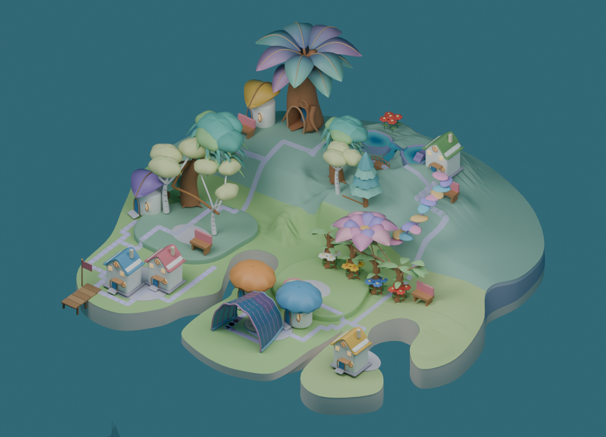

Forest stage3 · HOLD
U字案を本体へ導入しない。細い直線枝へ離れた葉塊を配る構造を見直し、元の幹から曲がって太さを保つ主枝と、前後・上下に重なる冠を設計する。倍率や座標の小さな反復調整を続けない。
Source画像の作者比較。本体の採用・通行・独立理解の合格ではありません。独立観察 N=0。
採用native-05 9de26a7f8a83176df37a7848cae4beea7962eb782247d07cf7e3b970a856f9c6前案stage2・道の影を本体に整合253be71d04a80c5650db98311c155083efb7e5f3cf6a53667374be2e2a19aee1stage3・U字の冠と庭
9de26a7f8a83176df37a7848cae4beea7962eb782247d07cf7e3b970a856f9c6前案stage2・道の影を本体に整合253be71d04a80c5650db98311c155083efb7e5f3cf6a53667374be2e2a19aee1stage3・U字の冠と庭
ac24191d8aa3603ea9e80ba56b2285a617cb906596b4390260d0f5648d0b400b - 前側の空間と入口は広く読める。
- 前の白樺の枝が長い白い放射線となり、小さく離れた葉塊を支えている。森の重なる面は前案より薄くなった。
- 庭を斜めに横切る直線的な茶色の補助枝は、自然な枝より支え棒として見える。
- 原本の密度を戸数や木の追加で再現するのでなく、同じ所有木で自然な枝と重なる冠の構造を作る必要がある。
Original source evidence · Review record